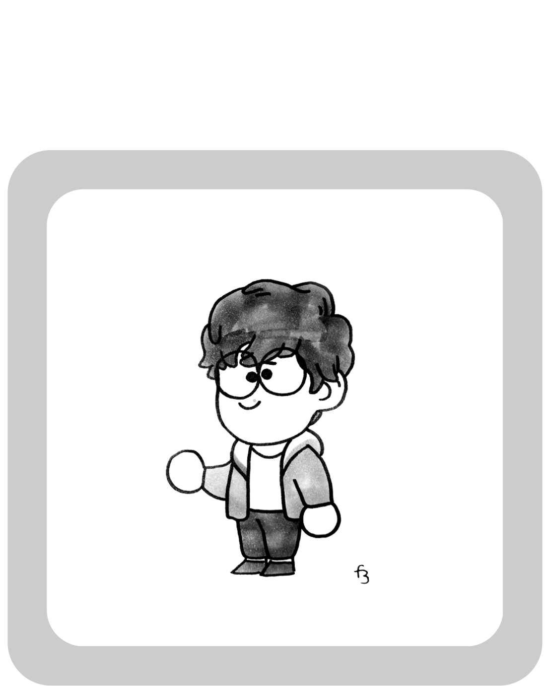

Jinpoki
Home
The Planet: Xaoc
The Landing Sites
Xiudae
HQ
The Swamp
The Never
Species Guide
A Short Guide
The Mother
Size Chart
Food & Growth
Trait List
Official Jinpoki
MYO Status
About the Creators
☰



